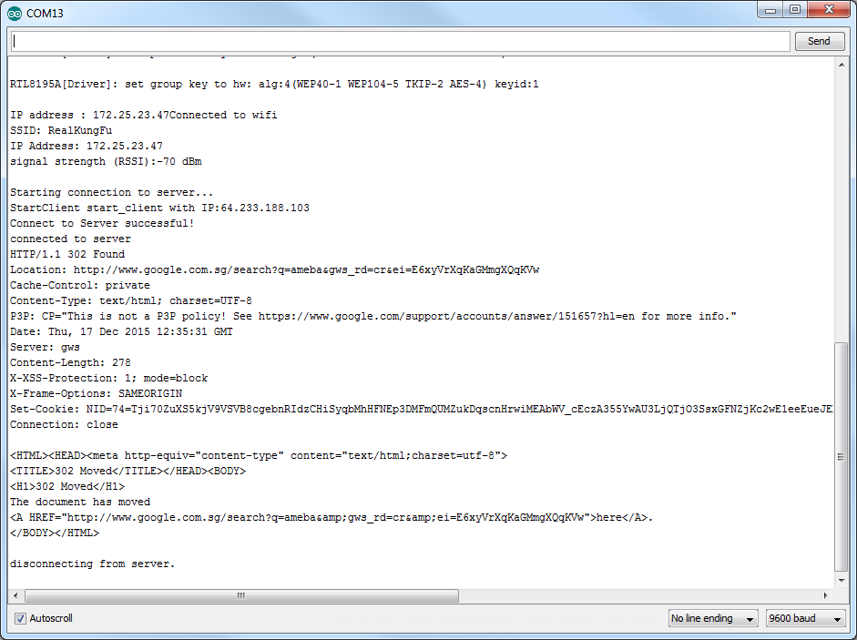
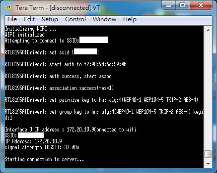
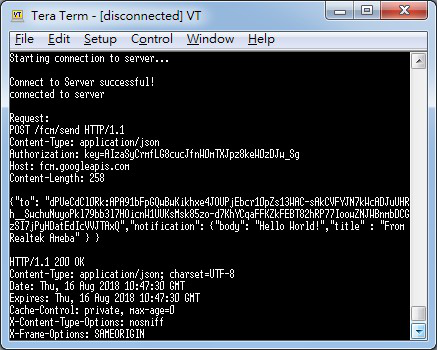
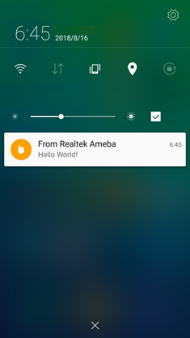

[RTL8722CSM] [RTL8722DM] Use Firebase To Push Messaging Services¶
Preparation
Ameba x 1
Android Studio
Smart phone with Google Play Service x 1
Example
In the era of the popularity of smart phones, people often receive reminders from specific apps. In this example, we will teach how to use Google Firebase to send messages from the Ameba Client to mobile phones.
First, we use Firebase Cloud Messaging (FCM) as a cross-platform messaging solution that lets you deliver messages for free and reliably.
With FCM, you can notify your client application (App) to sync emails or other data. You can send a message to drive user engagement. For instant messaging content, a message can transfer up to 4KB of payload to the client application.

The FCM implementation includes two main parts for sending and receiving:
You can use Admin SDK or HTTP&XMPP API to send messages.To test or send marketing or engagement messages with powerful built-in targeting and analytics, you can also useNotifications composer
We know that Ameba can send messages to specific apps as long as it implements the http client function.
First of all, we must first set up an environment for developing Android apps. Please download Android Studio first on Android official website.
https://developer.android.com/studio/install
Then we can use the Android example provided by Firebase to download Firebase Quickstart Samples.
https://github.com/firebase/quickstart-android
Open Android Studio and click on Import Project, select the messaging project in Firebase Quickstart Samples. Since we won’t use other functions, we can only choose the messaging project.
Android Studio will need to install the SDK and Google repository for the first time to start the messaging project. You can refer to the following page for update.
https://developer.android.com/studio/intro/update
Wait until the required components for compiling the app are installed, you can open the messaging project, and Android Studio comes with the Firebase registration function.

As shown above, open the toolbar and click Tools->Select Firebase.
{kind=link}
Open Firebase Assisant in the right pane, then see Cloud Messaging, select Set up Firebase Cloud Messaging to start the registration process.

Click Connect to Firebase

Then bring out the page, and click on Firebase on the left and log in to the Gmail account. Once you log in, you will be taken to the Firebase homepage.

Let’s keep the homepage first, we need to go to the Firebase Console and go back to Android Studio.

We can see that when the webpage is successfully logged in, Android Studio also brings up the login information dialog box, click connect to Firebase


As shown above, the messaging app is installed and executed successfully on the phone. Click LOG TOKEN at this time.

There will be a Token ID, which is the Access Token required to send the message, representing the ID of the FCM service APP installed on a particular phone. This ID is unique and will be reassigned when the app is removed and re-installed. It means that the message can be sent to a specific phone. The FCM service can also push messages to a NEWS (Topic). This section can be found in Firebase topic-messaging:
https://firebase.google.com/docs/cloud-messaging/android/topic-messaging
Therefore, we need to save this Access Token, return to Android Studio as shown below, select Debug at the log level of the Logcat. When you press the LOG TOKEN button on the App, Logcat will print out the Access Token ID. We will save the code after the InstanceID Token: in the Log message.

Then we have to go back to the page that was brought when we first logged into Firebase.
Click in the upper right corner to go to the console

At this point, You can see that Android Studio has just built the messaging project for us in the operation.

Click to enter the messaging project with settings page, as shown above.

Select Set up


As shown above, ACCESS_TOKEN and SERVER_KEY are defined in the reverse white part, that is, the ACCESS token ID that we just saved from the APP and the Server Key saved in the Firebase console page. We fill in the two sets of IDs, compile and upload them to Ameba. Press the Reset button and open the terminal.
{kind=link}
Connect to FCM Server after connecting to AP
{kind=link}
After showing Connect to Server successful, it means that the FCM connection is successful and the message will be sent. During the process, HTTP/1.1 200 OK will be received to indicate that the message is successfully pushed. At this time, the mobile phone screen is opened and the App receives the message from Ameba.
{kind=link}
Code Reference
https://firebase.google.com/docs/cloud-messaging/send-message
The main payload format in the program is as follows. The user can freely change the Title and Body of the message. Body represents the content of the message.
char const* payload = “{” \
“"to": \”” ACCESS_TOKEN “",” \
“"notification": {” \
“"body": \”Hello World!",” \
“"title" : \”From Realtek Ameba" ” \
“} }” ;
setup()
if (client.connect(server, 80)) {
Serial.println(“connected to server”);
// Make a HTTP request:
sprintf(message,”%s%s%s%s%s%d%s%s%s”,”POST /fcm/send HTTP/1.1nContent-Type: application/jsonnAuthorization: key=”,SERVER_KEY,”nHost: “,HOST_NAME,”nContent-Length: “,strlen(payload),”nn”,payload,”n”);
printf(“nRequest:n%s \n”,message);
client.println(message);
client.println();
}
The sprintf part puts the payload into the HTTP POST content and sends the message out after connecting to the FCM Server.
loop()
while (client.available()) {
char c = client.read();
Serial.write(c);
}
Waiting for the response from Server and printing out the response